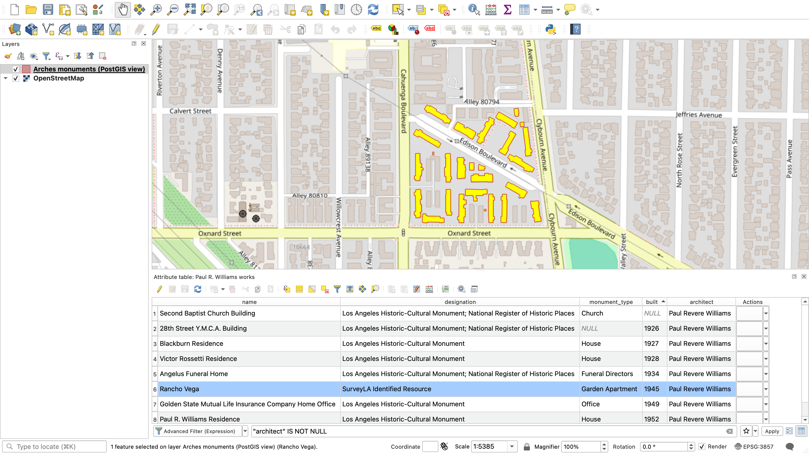

FOSS4G North America 2026 · Sacramento
Relationships Are the Data
Semantic graphs for geospatial resources
North Hollywood, Los Angeles
What does your GIS know?

SitusAddress 10403 EDISON WAY
UseDescription Five or more apartments
YearBuilt1 1945
Units1 126
Designation (none)
LA County Assessor parcel record. The City's Historic-Cultural Monument layer has no architect field at all.
Same place, with its relationships
Rancho Vega, in context
None of that is an attribute of the geometry. All of it is a relationship.
01 · The gap
You've seen this table before
| ID | TYPE | BUILT_BY | NOTES | DATE_DESC |
|---|---|---|---|---|
| 014 | culvert | City Engineering | rehab noted '19 | ca. 1970s |
| 015 | bridge | unknown | - | 1932? |
| 016 | pump_stn | Contractor X | see attached | 2004 |
A typical asset table: familiar, fast, and complete by its own definition.
Provenance, events, evidence, shared meaning, uncertain dates: none of it fits in a column until it's modeled as a relationship.

02 · The model
Arches: open source, standards-based
An open-source data management platform, developed with the Getty Conservation Institute and World Monuments Fund to answer a hard question: how do you describe cultural heritage?
- Uncertain dates, fuzzy extents, deep description
- Dense relationships between places, people, events and evidence
- Records that must outlive the software that holds them
AGPL-3.0, on your stack
PostgreSQL/PostGIS, Django, Elasticsearch, MapLibre, Vue
CIDOC CRM
The ontology behind every graph, adopted as ISO 21127:2023
Vocabularies and linked data
SKOS thesauri for shared terms; every resource exports as JSON-LD
The demo uses the community's open arches-her models, built for Historic Environment Records, plus a few US terms.
02 · The model
Graphs inside and between resources
Inside a resource model
Between resources
Every node-edge-node path is a triple: subject → predicate → object, for example Production → P14 carried out by → Paul R. Williams.
The model in Arches' graph designer

The arches-her Person model: each branch has a CIDOC CRM class (E21 Person, E67 Birth, E41 Appellation...).
02 · The model
Keep your features: Arches speaks GIS
- PostGIS: geometries live where the rest of your data does
- Views for QGIS and OGC services: geometry plus attributes, including ones derived from relationships
- APIs: GeoJSON and vector tiles
- GeoLibre plugin (experimental, needs Arches 8.2): live, permission-aware editing in the browser

03 · Demo
Arches + GeoLibre, real LA data
- Screen an area: what's here, and why does it matter?
- Follow the relationships: from a parcel to an architect to a city-wide network
- Bring it into your GIS: GeoLibre, in both directions
1,343 LA Historic-Cultural Monuments (City Planning) · Wikidata · LA County Assessor · OpenStreetMap
Demo backup · The whole demo, recorded (3 min)

Demo recap · A · Arches · 1/9
Screen an area
A search over a hypothetical corridor in North Hollywood returns Rancho Vega and the records linked to it: its developer, the SurveyLA survey and the Lockheed-Vega plant.
So far, any GIS can do this.

Demo recap · A · Arches · 2/9
An unremarkable record
On its own, Rancho Vega looks ordinary: 27 building footprints, garden apartments, built in 1945, not a designated landmark.
Its geometry is one value among many.

Demo recap · A · Arches · 3/9
…and who it's connected to
Paul R. Williams as Architect. The Rancho Vega Housing Corporation as Developer. Associated with the Lockheed-Vega plant. Cross-referenced to the county assessor's parcel.
Each of these is a typed relationship, not a text field.

Demo recap · A · Arches · 4/9
Rancho Vega's relationships
Eleven relationships: the architect, the developer, the plant it housed workers for, the survey that identified it, World War II, and the sources behind those claims, including HistoricPlacesLA.
This network is what makes Rancho Vega significant.

Demo recap · A · Arches · 5/9
Follow the architect
Williams links to 16 works. Seven are LA Historic-Cultural Monuments; the City's own monument layer has no architect field to show that.
Rancho Vega is one of the few that isn't designated.

Demo recap · B · GeoLibre · 6/9
Arches data in GeoLibre
GeoLibre, an open-source GIS that runs entirely in the browser, loads the Arches Monument layer through the plugin. Same footprints, same permissions.
The relationships stay in Arches; the GIS still gets the geometry.

Demo recap · B · GeoLibre · 7/9
A record with no geometry
The plugin asks Arches for records with no geometry and finds one: the Lockheed-Vega plant, known only from documentary sources.
No spatial view, and no map, can show a record that has no geometry yet.

Demo recap · B · GeoLibre · 8/9
Resource-first editing
A contributor draws a rough footprint near the Burbank airport and pushes it to Arches. Because they aren't a reviewer, it's saved as a provisional edit.
The record existed semantically before it existed spatially.

Demo recap · B · GeoLibre · 9/9
Back in Arches, for review
A reviewer opens the plant in Arches and sees the new geometry waiting for approval, along with the rest of the record's context.
Context was added without bypassing governance.
03 · Demo · Bring it into your GIS (recorded)
04 · The payoff
Legible, not just fast
In a flat table
- For people: readable relationships, backed by evidence
- For machines: explicit classes and properties, not column names to decode
The same fact, exported from Arches as JSON-LD
{ "@type": "crm:E18_Physical_Thing", ... "crm:P14_carried_out_by": { "@id": ".../resources/8ec6c939-…", "@type": "crm:E21_Person" }, "crm:P2_has_type": { "rdfs:label": "Architect" }, "crm:P4_has_time-span": { "crm:P3_has_note": "1945" } }
Trimmed from Rancho Vega's real export; namespaces shortened.
The same structure that makes data FAIR for people makes it legible to AI systems.
04 · The payoff
The parcel layer said "five or more apartments, 1945."
The graph showed significance before the bulldozer arrived.
Integrated spatial and semantic data means fewer surprises, faster review, and decisions you can defend.
05 · Beyond heritage
Not just heritage
Port of San Francisco
Development projects, construction permitting, environmental review
Union Sanitary District
East Bay wastewater collection and treatment; parcel data and import workflows
BC Fossil Management System
Fossil sites, collections and permits, British Columbia
Arches for Science
Conservation science lab data (CNR DataSpace); heritage-adjacent
One core, many applications: heritage inventories · Arches for Science · RaSColls (reference and sample collections) · Lingo (shared vocabularies)
a flat attribute table is fine
a semantic graph pays off
Open source
Come build with us
- Arches (AGPL-3.0): github.com/archesproject/arches
- The Arches project: archesproject.org, with docs, community forum and implementations
- These slides: rgaston.com/foss4gna_2026
Good places to start: GIS integrations (QGIS, OGC API Features, GeoLibre), extensions, shared vocabularies.
 Slides
Slides Arches on GitHub
Arches on GitHub archesproject.org
archesproject.orgThank you
Questions?
Relationships Are the Data: Semantic graphs for geospatial resources
Data: LA City Planning (HCM layer), HistoricPlacesLA (photo), LA County Assessor, Wikidata (CC0), © OpenStreetMap contributors (ODbL).